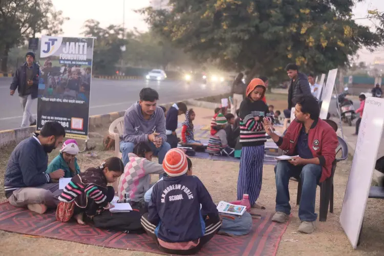

Why People Call It "Sadak Kinare Wala School"
Every evening near Radha Rani Circle on Mahal Road, Jagatpura, Jaipur, mats are laid out under the open sky, notebooks open, and over 100 children gather with sparkling curiosity. Because our classes take place right beside the community where these children live, neighbours, passersby, and volunteers often lovingly refer to Jaiti Foundation (जयति फाउंडेशन) as Jaipur's Sadak Kinare Wala School (सड़क किनारे वाला स्कूल).
Many children from migrant and daily-wage families in Jagatpura, Pratap Nagar, and surrounding settlements never had a formal classroom within reach. Rather than waiting for big buildings, Jaiti Foundation brought dedicated educators, structured lesson plans, notebooks, and care straight to the roadside in 2024—ensuring that no child is left behind simply because of where they live.
Today, more than 250+ children have been positively impacted through our completely free academic classes, moral & civic value lessons, one-on-one mentoring, and daily nutritious meals.

100+
Children Studying Daily • 100% Free